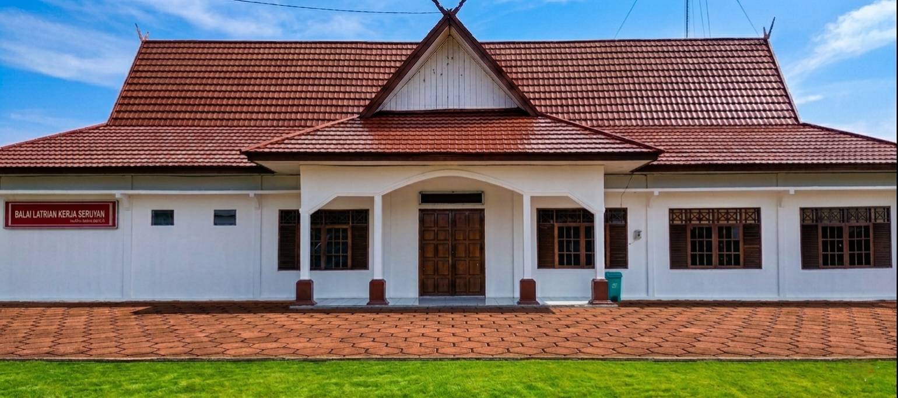

Membangun Kompetensi Tingkat Tinggi Menuju Pasar Kerja Global
Inkubator pelatihan kerja standardisasi SKKNI nasional terakreditasi guna melahirkan angkatan kerja tangguh daerah Seruyan.
Eksplorasi Program Studi »
PELATIHAN VOKASI NASIONAL BATCH 2 TAHUN 2026
Siswa terpilih berhak mendapatkan fasilitas seragam lengkap, ATK, modul belajar, makan siang, uang saku, dan sertifikat garansi BNSP.
?
Alumni Terserap Kerja
0
Kejuruan Aktif
0
Aliansi Perusahaan Mitra
Sistem Alur Pendidikan & Kelulusan
Prosedur penjaminan mutu kompetensi siswa dari pendaftaran hingga penyaluran kerja
Pendaftaran Akun
Verifikasi berkas administratif daring melalui ekosistem akun SIAPkerja Kemnaker.
Uji Saring Seleksi
Mengikuti ujian kompetensi dasar tertulis dan interviu minat bakat bersama instruktur spesialis.
Inkubasi Praktik
Pelatihan intensif berbasis proyek di ruang bengkel simulasi industri modern.
Sertifikasi & Kerja
Menjalani ujian kompetensi nasional BNSP dan disalurkan langsung ke jejaring industri mitra.
Pertanyaan Sering Diajukan (FAQ)
Informasi penting seputar pendaftaran pelatihan kerja
Peta Geospasial Kantor & Sentra Pelatihan
Gunakan peta interaktif di bawah ini untuk melihat rute panduan navigasi ke lokasi kampus BLK